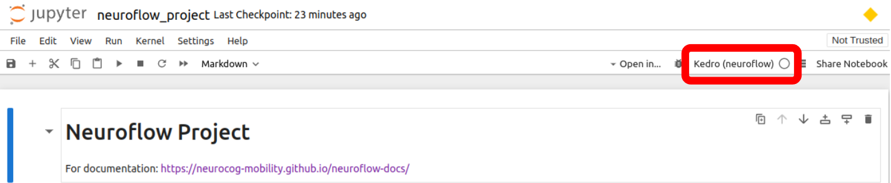
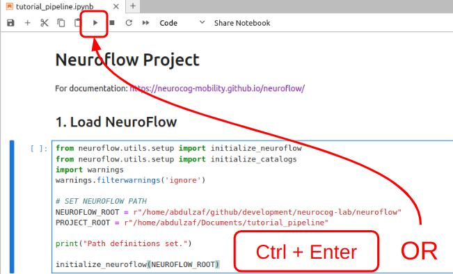
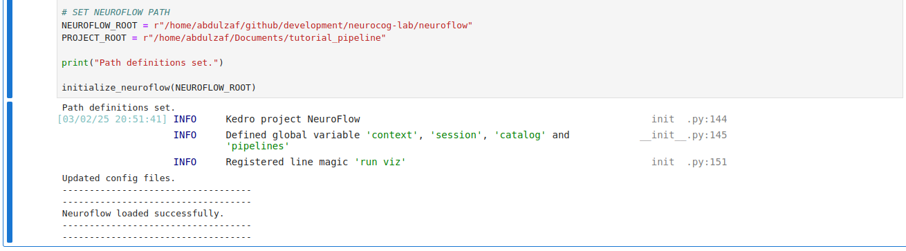

Initializing a NeuroFlow project#
We will want a project folder separate from the data folder for our analysis where we can keep all the scripts, data and processed outputs for each analysis we want to run.
Creating the project folder#
This section will go over creating a project folder for the tutorial pipeline:
Open a terminal in the location you want your project folder to be created (e.g. the
Documentsfolder).Enter the following command:
python -m neuroflow --create tutorial_pipelineNote
Remember to use
pythonorpython3according to your system.You should be the following output in the terminal, indicating the project was created successfully!
[03/02/25 02:55:33] INFO Using __init__.py:270 '/usr/local/lib/python3.10/dist-packages/kedr o/framework/project/rich_logging.yml' as logging configuration. -> Creating project: /Documents/tutorial_pipeline /Documents/tutorial_pipeline --> Project folder created successfully: /Documents/tutorial_pipeline --> Creating notebook templates... --> Successfully created Jupyter notebooks. --> Notebook configured successfully.
tutorial_pipeline folder should now appear in your chosen project location.tutorial_pipeline
├── catalogs
├── data
│ ├── processed
│ └── raw
├── tutorial_pipeline.ipynb
├── tutorial_pipeline_dev.ipynb
Loading & initializing NeuroFlow#
Let’s open tutorial_pipeline.ipynb (see Launching Jupyter for help) and load up NeuroFlow.
Ensure that Jupyter is using the
Kedro (neuroflow)kernel (instead of a base Python kernel) by checking the label in the right side of the top panel:
If another kernel is being used, click the label to switch the kernel and select
Kedro (neuroflow)from the selection menu. If you do not see an option forKedro (neuroflow), refer to the Initializing NeuroFlow instructions.With the Notebook open, click in the first code cell under the section 1. Load NeuroFlow to select it and run it by pressing
Ctrl + Enter(or by clicking the Play icon at the top of the Notebook).
You should see the following cell output, with a message of
Neuroflow loaded successfully.
We can now move on to exploring the NeuroFlow pipelines!